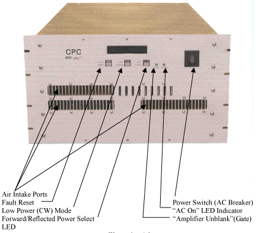

- 00000018WIA30A02E20GYZ
- id_131060143.0
- Aug 29, 2019 1:40:31 AM
MNS RF Chain Troubleshooting
Summary
This document contains possible error messages and faults due to the MNS RF Transmit and receive chains. It is not an exhaustive list of possible faults due to the MNS chain. If you experience a fault due to the MNS chain that is not listed in this document, please communicate this to Service Engineering.
In this document you will find troubleshooting for:
-
RF Receive (MNS)
-
RF Transmit (MNS)
MNS T/R Module should be removed from System when Spectroscopy Scanning has been completed. The presence of the module may cause IQ degradation.
Diagnostics
You have experienced problems when running the Multi Nuclear Spectroscopy (MNS) Functional Checks and/or you are experiencing a problem with MNS.
Problem / Solution Table
| SYMPTOM | PROBABLE CAUSE | GE FIELD ACTION | RELATED REPLACEMENTS |
| FUNC Test runs without errors, but there is no signal. | Channel select | Verify that the field labeled Multicoil Channel Select in the P31_Flex Coil Config file is set to 128. If changed, save changes and reboot system. | |
| FUNC Test runs without errors, but there is no signal. | Switch Select | Verify that the field labeled Multicoil Switch Select in the P31_Flex Coil Config file is set to 0. If changed, save changes and reboot system. | |
| FUNC Test runs without errors, but there is no signal. | 8 Channel Switch Cabling | MNS receive line must be plugged into AUX CH 8. (Bottom of
switch module.) (Not applicable to 16-channel switch) | |
| FUNC Test runs without errors, but there is no signal. | 8 Channel Switch Cabling | The green LED for CH 8 on the switch module should be switched to the AUX input. Diagnose switch problems if it is not. (Not applicable to 16-channel switch) | |
| FUNC Test runs without errors, but there is no signal. | 8 Channel Switch Cabling | Verify +15VDC on the AUX CH 8 Input connector. Replace switch if not detected. (Not applicable to 16-channel switch) | |
| FUNC Test runs without errors, but there is no signal. | TX signal out of specification. | Verify the amplitude of the RF TX pulse at the input of the RF amplifier. Disconnect the cable at the RF IN port on the amplifier and connect to the 50 Ohm DC input of an oscilloscope. When the scan is running, the amplitude of the square pulse should be >0.5 Volts peak-to-peak at a TG setting of 200. If not, run Slave Exciter diagnostics. | |
| T/R Bias fault | Cables | Verify that the T/R bias path is complete from the bias driver module in the system cabinet to the TR switch on the LPCA cover. Check connections in the TX path at the RFPA, pen-wall and rear pedestal. | |
| Reflected power on RF amplifier high (>50% of Forward power | The RF amplifier is not making connection to MNS coil. | FOR CPC AMP: push the button on the front of the CPC amplifier to read the reflected power Figure 1. Reflected power should be less than 50W. If it is anywhere near as high as transmit power, check connections between amp and coil. FOR AMT 8kW AMP: There is no diagnostic tool to test this at this point in time. | |
| Reflected power on RF amplifier high (>50% of Forward power) | The RF amplifier is not making connection to MNS coil. | FOR CPC 4kW AMP: push the button on the front of the CPC amplifier to read the reflected power (see Ill 4-2). Reflected power should be less than 50W. If it is anywhere near as high as transmit power, check connections between amp and coil. FOR AMT 8kW AMP: There is no diagnostic tool to test this at this point in time. | |
| UPM Sense fault | UPM is in open circuit, not connected to 50 Ohm load | Check power coupler cables to UPM and be sure that the 50 ohm terminators are connected | 50 Ohm Terminators UPM Boards |
| UPM Sense light and/or inhibit light constantly illuminated | Sense light should only light when there is RF power present and it is being gated (during unblank signal). Some hardware (circuit board or amplifier) is causing the signal to be present all the time | 1) Systematically swap the circuit boards inside the ASC chassis
taking note of if the error follows one particular board. If so, try
replacing that board. 2) Systematically swap the connections from the amplifier to the boards in the ASC to see if this indicates a problem coming from the amplifier | UPM RF detector boards UPM processor boards RF Amplifier |
| Getting UPM errors at GOC “spectro amp not ready” | 50 ohm terminators may be connected | Check that 50 ohm 10ads (BNC male snap-on) are applied tot all 6 power monitor inputs on the SSM. (Head A, B; Body A,B Spectro A,B there are ports j101, j102, j106, j107, j108 and j110) |
